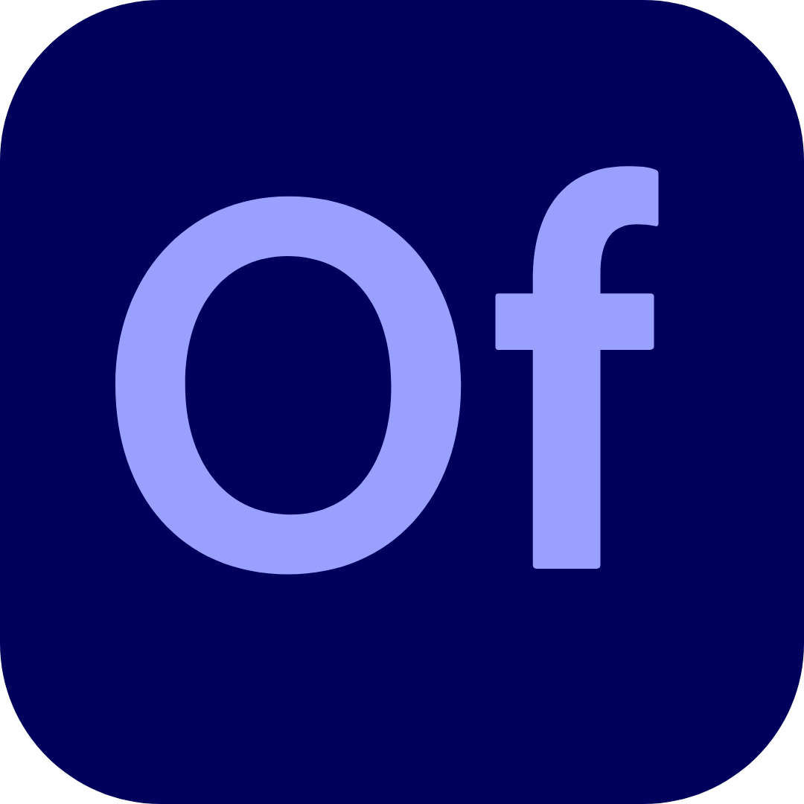

File
Edit
View
Insert
New Symbol...
Ctrl+F8
Modify
Help
Create new
Open
Welcome to OpenFlash
Select a template or open an existing animation to start.
FLA Document
Social Media
Cut
Ctrl+X
Copy
Ctrl+C
Paste
Ctrl+V
Delete
Del
Convert to Symbol...
F8
Create New Symbol
✕
Name:
Type:
Movie Clip
Button
Graphic
Folder:
Library root
▶ Advanced